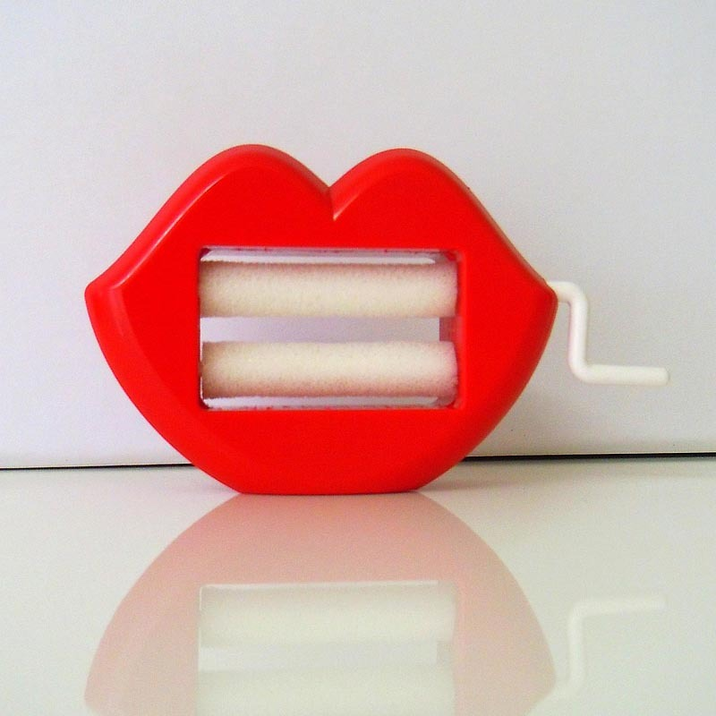

Губозакатывательная машинка ГЗМ-5М

Описание товара
Прибор для уменьшения аппетитов ГЗМ-5М (губозакатывательная машинка, модель пятая, модернизированная)Характеристики товара
| № | Характеристики | значения |
| 1 | Длина | 60 см |
| 1 | Ширина | 85 см |
| 1 | Высота | 24 см |
| 1 | Вес | 150 грамм |
- Размеры: 60х85х24.
- Вес: около 150 г.
Подробное описание товара
Губозакаточная машинка — это отличное средство для снижения уровня запросов.
Мягкие валики бережно закатывают раскатанные губы, возвращая им прежний размер и цвет.
Губозакаточную машинку необходимо всегда иметь при себе, ведь никогда не знаешь,
когда и где она понадобится. Кроме того, вы сможете помочь друзьям, предложив им
закатать губу, если они вдруг забудутся и потеряют связь с реальностью.
Каждая машинка продается в подарочной упаковке и укомплектована инструкцией по
применению. В инструкции доходчиво описано, как и при каких обстоятельствах необходимо
применять губозакаточную машинку. ГЗМ может стать прощальным подарком слишком
требовательной женщине, или подарком-намеком или другим презентом в подходящей ситуации.
Покупайте и наслаждайтесь! Добавлю чтонибудь, а то пулреквест не делается :)